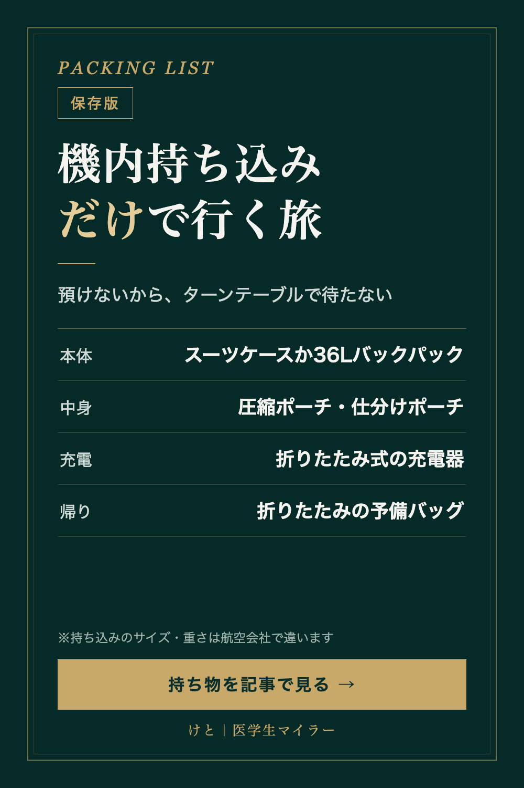

PACKING LIST
機内持ち込みだけで行く旅の持ち物｜サイズのルールとバッグの選び方
2026/10/18 時点の情報
預け荷物なしで行けば、到着後にターンテーブルで荷物を待たずに移動できます。そのかわり、すべてをサイズと重さの上限の中に収める必要があります。ANA国際線のルールを例に、機内持ち込みだけで行く旅の持ち物をまとめました。
※PR｜この記事には楽天ROOMの商品リンクがあります。リンクから購入されると、運営者に紹介報酬が入ります。商品は、使った感想ではなく、公式のルールと商品の仕様（販売ページの表記）を見比べて選んでいます。

まず確認：機内持ち込みのルール（ANA国際線の場合）
- 機内持ち込み手荷物1個：3辺の合計が115cm以内、かつ55cm×40cm×25cm以内
- 身の回り品1個：40cm×30cm×20cm以内（前の座席の下に入れる）
- 重さ：2個の合計で10kgまで
サイズは、キャスターやハンドルの長さも含みます。また、サイズ以内の手荷物でも、客室内に収納できない場合は貨物室に預けることがあります。
上限は航空会社や運賃の種類で違い、LCCは特に厳しいことがあります。乗る便の規定を必ず確認してください。
1. 本体：スーツケースか、バックパックか
重さの上限10kgには、バッグそのものの重さも含まれます。どちらを選ぶ場合も、販売ページでサイズと重さを確認しておくと安心です。
- プロテカ マックスパス（楽天ROOM）：日本製の、機内持ち込みサイズのスーツケース。静かなキャスターと長期保証つき
- B4U スーツケース（楽天ROOM）：前から開けられるフロントオープンの、機内持ち込みサイズとして販売されているスーツケース。TSAロックとストッパー付き
- キャビンゼロ クラシック 36L（楽天ROOM）：販売ページの表記で幅31×高さ45×奥行20cm、重さ700gのバックパック。日本正規品は25年保証
2. 中身：圧縮するか、仕分けるか
- 圧縮収納ポーチ 3・4点セット（楽天ROOM）：販売ページでは、衣類のスペースを約50%節約できるとされています
- トラベルポーチセット 6点（楽天ROOM）：圧縮タイプではなく、仕分け重視の6点セット
圧縮すると体積は減りますが、重さは変わりません。10kgの上限に近い場合は、量そのものを見直す必要があります。
3. 充電：モバイルバッテリーのルールに注意
2026年4月24日から、機内に持ち込めるモバイルバッテリーは2個まで（160Wh以下）になり、機内でモバイルバッテリーを充電することも、モバイルバッテリーからスマホなどを充電することもできなくなりました（国土交通省）。モバイルバッテリーは、預け荷物にも入れられません。
機内で充電するなら、座席の電源を使うことになります。座席に電源があるか・どんな形かは、航空会社と機材で違うので、予約のときに確認してください。
▶ Anker Nano II 65W（楽天ROOM）：折りたたみ式プラグの65WのUSB-C充電器
モバイルバッテリーのルールと長距離便の持ち物は、長距離エコノミーの持ち物7つにもまとめています。
4. 帰りに荷物が増えたら
ANA国際線の機内持ち込みは、手荷物1個と身の回り品1個までです。お土産などで増えた分は、預けることになります。預け荷物の無料の個数は運賃によって0〜2個で、1個あたり23kgまで・3辺の合計158cm以内です（エコノミークラス・プレミアムエコノミー）。
▶ 折りたたみキャリーオンバッグ（楽天ROOM）：折りたたんで持っていける、予備のバッグ
まとめ
- 本体は、サイズと重さを販売ページで確認してから選ぶ
- 中身は圧縮か仕分けか。圧縮しても重さは減らない
- モバイルバッテリーは2個まで・機内では使えない
- 帰りに増える分は、預ける前提で予備のバッグを
紹介した商品は、楽天ROOMのコレクションにまとめています。▶ 機内持ち込みだけで行く旅（楽天ROOM）